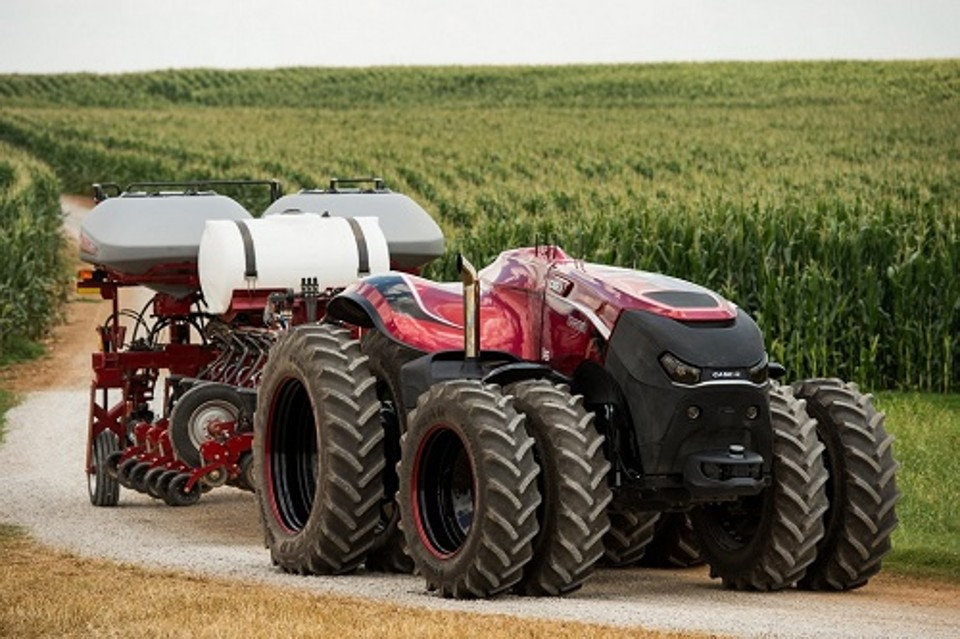

Modelos vistos como o futuro da agricultura podem operar por até 30 horas sem parar. A agricultura do futuro deve contar com tratores autônomos no campo, ou seja, modelos que funcionam sem condutor a bordo. No Reino Unido, por exemplo, o agricultor Will Mumford, de Cambridgeshire, Inglaterra, já utiliza dois modelos sem motorista e com recursos de inteligência artificial (IA). Como funciona o trator sem motorista; Mumford usa dois modelos: um para cuidar do solo e outro para plantar sementes. Diferente dos tratores operados por humanos, os modelos vistos como o futuro da agricultura podem operar por até 30 horas sem parar. Como são menores e mais leves, também causam menos danos ao solo. Para efeito de comparação, os tratores sem condutor têm cerca de metade do tamanho dos convencionais. Eles ainda possuem recursos como radar, ultrassom e sensores, que param o veículo sozinho caso detecte algum objeto no caminho, por exemplo. Mumford espera que a introdução de mais tratores autônomos e com IA não substituirá o trabalho dos agricultores. A ideia é que os veículos funcionem como um aliado: “Estamos eliminando os trabalhos lentos. Eles (os produtores) não precisam mais ficar sentados em um trator por horas a fio“, disse em entrevista à BBC. “Estas máquinas são muito mais leves e amigas do solo e esperamos que, com o tempo, possamos cultivar de uma forma muito melhor e sustentável“, acrescentou. Quanto custa um trator autônomo? Um ponto negativo ainda é o preço. Segundo o Sindicato Britânico dos Agricultores, os avanços são importantes, mas o valor deve ficar mais acessível para a adoção em massa dos novos tratores autônomos. Atualmente, eles custam a partir de £ 180.000, mais de R$ 1,1 milhão na cotação atual, mas podem alcançar £ 320.000, acima dos R$ 2 milhões em conversão direta. Especialistas projetam que ainda demorará em média cinco anos até que os tratores inteligentes se tornem populares.
“Quando coisas como esta são lançadas, leva cerca de cinco anos para que se tornem realmente populares”, projeta o engenheiro agrícola Tom Carnell. A Farmertronics foi fundada em 2012 por Thieu Berkers. Crescendo na fazenda onde seu pai trabalhava com um cavalo e depois com um trator, Thieu descobriu, com base em sua formação em alta tecnologia, que o próximo passo natural na agricultura deveria ser um trator autônomo. Literalmente começando do zero, ele e sua equipe criaram um trator não tripulado de alta tecnologia, chamado eTrac. Não é apenas amigo do meio ambiente; também da tempo livre para o agricultor diário ter mais tempo com sua família ou em novos projetos. Imagine as possibilidades. “O eTrac é inspirado no meu pai. Há uma forte conexão com minha juventude e também uma forte conexão com o futuro. A agricultura pode ser feita de forma muito mais inteligente do que com um trator normal", diz Thieu Berkers. Benefícios do trator autônomo Com base na mesma filosofia de um trator normal, o inovador eTrac elétrico permite que os agricultores trabalhem remotamente e economizem custos no processo. Cada componente foi exaustivamente pesquisado para garantir que o trator fosse seguro e durável e, ao mesmo tempo, um produto ecologicamente correto. O aplicativo incluído permite que o agricultor receba notificações e especifique o caminho que o eTrac precisará seguir, assim o agricultor pode fazer outros serviços sem preocupações. Pesando apenas 1000kg, o eTrac é um trator leve que ajuda a prevenir a compactação do solo. Ele é totalmente elétrico, o que o torna praticamente livre de manutenção e, ao coletar dados e fornecer feedback ao agricultor, o agricultor obtém uma visão geral e precisa da colheita, tornando-o uma solução mais econômica.
Thieu Berkers acrescenta: "Você economiza custos do pessoal, já que não há motorista e pode funcionar dia e noite. Claro que o agricultor precisa fazer um investimento. No entanto, o retorno financeiro é de apenas quatro anos. É outra forma de agricultura. É mais remoto porque o agricultor pode verificar tudo a partir do smartphone ou tablet." Atuador com interface de barramento CAN para função de elevação Procurando uma solução para elevar a plataforma de corte que pudesse se conectar e se comunicar facilmente com outros componentes, a Farmertronics escolheu um atuador elétrico LINAK® com uma interface de barramento CAN. Todas as demais unidades do trator já estavam conectadas por CAN bus, o que tornava fundamental que a solução de levantamento também fosse baseada em CAN bus. Por ser também uma rede em tempo real, torna o sistema muito flexível, podendo se adaptar facilmente às mudanças implementadas remotamente. "Eu escolhi a LINAK porque a solução se encaixou muito bem em nossa aplicação. Além disso, a LINAK já era bem-sucedida na agricultura. Também é uma questão de sentimento. Não sei dizer exatamente qual era a diferença, mas em um determinado momento ficou claro para mim escolher a LINAK", explica Thieu Berkers. Etapas futuras. Assim como qualquer trator comum, o eTrac voltado para o futuro consiste em uma base que o equipamento agrícola possa ser acoplado. A Farmertronics está constantemente adicionando novas funcionalidades para criar mais opções e tornar o trator ainda mais confiável e preciso. Neste mundo digitalizado, a gama de opções futuras é infinita, mas a Farmertronics começará com um pulverizador, adicionando sensores 3D e desenvolvendo uma semeadora.
NO CASO DO BRASIL
Já o Brasil, país líder na produção agropecuária mundial, deve passar a adotar esse tipo de tecnologia de automação com mais força nos próximos anos, conforme as redes de telecomunicações se expandem até o campo. Dados do Ministério das Comunicações apontam que 43,6% dos moradores do campo já têm acesso à internet.Porém, somente agora com a chegada do 5G – que oferece maior banda de internet e menor latência – será possível impulsionar o uso não apenas de tratores autônomos, mas também drones com IA e outras máquinas operadas à distância. Além da questão da falta da conectividade no campo, o custo ainda é considerado um fator limitante para a popularização dessa tecnologia pelo agronegócio brasileiro. Um único trator autônomo japonês pode custar mais de R$ 600 mil, por exemplo. Contudo, o uso desses veículos inteligentes tende a se tornar algo “obrigatório”. Com a falta de mão de obra e o aumento das áreas cultivadas, bem como a demanda por maior produção de alimentos, é natural que a agricultura se torne cada vez mais automatizada.